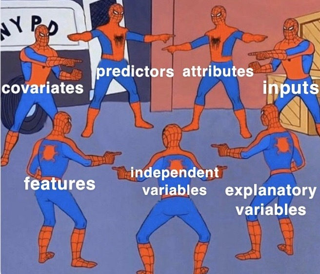

Department of Statistics & Data Science Carnegie Mellon University
Background
Concepts that hopefully you’ll be able to distinguish
Supervised vs. unsupervised learning
Classification vs. regression
Classification vs. clustering
Explanatory vs. response variable
Inference vs. prediction
Flexibility-interpretability tradeoff
Bias-variance tradeoff
Model assessment vs. model selection
Parametric vs. nonparametric models
Statistical learning
Statistical learning refers to a set of tools for making sense of complex datasets. — Preface of ISLR
General setup: Given a dataset of \(p\) variables (columns) and \(n\) observations (rows) \(x_1,\dots,x_n\).
For observation \(i\), \[x_{i1},x_{i2},\ldots,x_{ip} \sim P \,,\] where \(P\) is a \(p\)-dimensional distribution that we might not know much about a priori
Supervised learning
Response variable \(Y\) in one of the \(p\) variables (columns)
The remaining \(p-1\) variables are predictor measurements \(X\)
Regression: \(Y\) is quantitative
Classification: \(Y\) is categorical
Goal: uncover associations between a set of predictor (independent / explanatory) variables / features and a single response (or dependent) variable
Accurately predict unseen test cases
Understand which features affect the response (and how)
Assess the quality of our predictions and inferences
They’re all the same

Supervised learning
Examples
Identify the risk factors for prostate cancer
Predict whether someone will have a heart attack based on demographic, diet, and clinical measurements
Predict a player’s batting average in year \(t+1\) using their batting average in year \(t\) and uncover meaningful relationships between other measurements and batting average in year \(t+1\)
Given NFL player tracking data which contain 2D coordinates of every player on the field at every tenth of the second, predict how far a ball-carrier will go at any given moment within a play
Examples of statistical learning methods / algorithms
You are probably already familiar with statistical learning - even if you did not know what the phrase meant before
Examples of statistical learning algorithms include:
Generalized linear models (GLMs) and penalized versions (lasso, ridge, elastic net)
Decision trees and its variants (e.g., random forests, boosting)
Neural networks
Two main types of problems
Regression models: estimate average value of response (i.e. the response is quantitative)
Classification models: determine the most likely class of a set of discrete response variable classes (i.e. the response is categorical)
Which method should I use in my analysis?
IT DEPENDS - the big picture: inference vs prediction
Let \(Y\) be the response variable, and \(X\) be the predictors, then the learned model will take the form:
\[
\hat{Y}=\hat{f}(X)
\]
Care about the details of \(\hat{f}(X)\)? \(\longrightarrow\) inference
Fine with treating \(\hat{f}(X)\) as a obscure/mystical machine? \(\longrightarrow\) prediction
Any algorithm can be used for prediction, however options are limited for inference
Active area of research on using more mystical models for statistical inference
The tradeoffs
Some tradeoffs
Prediction accuracy vs interpretability
Linear models are easy to interpret; boosted trees are not
Good fit vs overfit or underfit
How do we know when the fit is just right?
Parsimony versus black-box
We often prefer a simpler model involving fewer variables over a black-box involving more (or all) predictors
Model flexibility vs interpretability
Generally speaking: tradeoff between a model’s flexibility (i.e. how “wiggly” it is) and how interpretable it is
The simpler parametric form of the model, the easier it is to interpret
Hence why linear regression is popular in practice
Model flexibility vs interpretability
Parametric models, for which we can write down a mathematical expression for \(f(X)\)before observing the data, a priori (e.g. linear regression), are inherently less flexible
Nonparametric models, in which \(f(X)\) is estimated from the data (e.g. kernel regression)
Model flexibility vs interpretability
If your goal is prediction, your model can be as arbitrarily flexible as it needs to be
We’ll discuss how to estimate the optimal amount of flexibility shortly…
Looks about right…
Model assessment vs selection, what’s the difference?
Model assessment:
evaluating how well a learned model performs, via the use of a single-number metric
Model selection:
selecting the best model from a suite of learned models (e.g., linear regression, random forest, etc.)
Left panel: intuitive notion of the meaning of model flexibility
Data are generated from a smoothly varying non-linear model (shown in black), with random noise added: \[
Y = f(X) + \epsilon
\]
Model flexibility
Orange line: an inflexible, fully parametrized model (simple linear regression)
Cannot provide a good estimate of \(f(X)\)
Cannot overfit by modeling the noisy deviations of the data from \(f(X)\)
Model flexibility
Green line: an overly flexible, nonparametric model
It can provide a good estimate of \(f(X)\)
… BUT it goes too far and overfits by modeling the noise
This is NOT generalizable: bad job of predicting response given new data NOT used in learning the model
So… how do we deal with flexibility?
GOAL: We want to learn a statistical model that provides a good estimate of \(f(X)\)without overfitting
There are two common approaches:
We can split the data into two groups:
training data: data used to train models,
test data: data used to test them
By assessing models using “held-out” test set data, we act to ensure that we get a generalizable(!) estimate of \(f(X)\)
We can repeat data splitting \(k\) times:
Each observation is placed in the “held-out” / test data exactly once
This is called k-fold cross validation (typically set \(k\) to 5 or 10)
\(k\)-fold cross validation is the preferred approach, but the tradeoff is that CV analyses take \({\sim}k\) times longer than analyses that utilize data splitting
Model assessment
Right panel shows a metric of model assessment, the mean squared error (MSE) as a function of flexibility for both a training and test datasets
Training error (gray line) decreases as flexibility increases
Test error (red line) decreases while flexibility increases until the point a good estimate of \(f(X)\) is reached, and then it increases as it overfits to the training data
Model assessment metrics
Loss function (aka objective or cost function) is a metric that represents the quality of fit of a model
For regression we typically use mean squared error (MSE) - quadratic loss: squared differences between model predictions \(\hat{f}(X)\) and observed data \(Y\)
“Numquam ponenda est pluralitas sine necessitate” (plurality must never be posited without necessity)
From ISLR:
When faced with new data modeling and prediction problems, it’s tempting to always go for the trendy new methods. Often they give extremely impressive results, especially when the datasets are very large and can support the fitting of high-dimensional nonlinear models. However, if we can produce models with the simpler tools that perform as well, they are likely to be easier to fit and understand, and potentially less fragile than the more complex approaches. Wherever possible, it makes sense to try the simpler models as well, and then make a choice based on the performance/complexity tradeoff.
In short: “When faced with several methods that give roughly equivalent performance, pick the simplest.”
The curse of dimensionality
The more features, the merrier?… Not quite
Adding additional signal features that are truly associated with the response will improve the ftted model
Reduction in test set error
Adding noise features that are not truly associated with the response will lead to a deterioration in the model
Increase in test set error
Noise features increase the dimensionality of the problem, increasing the risk of overfitting